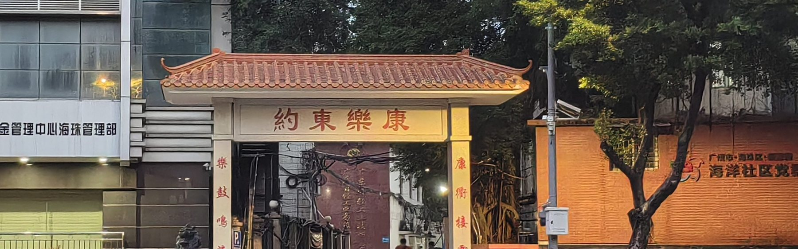
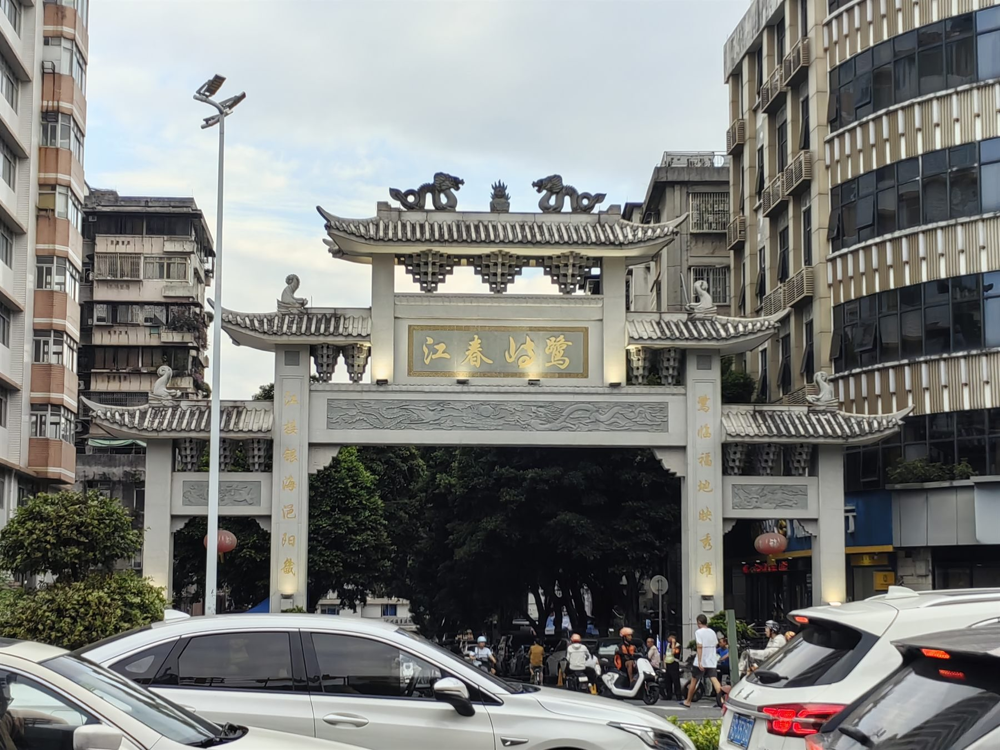
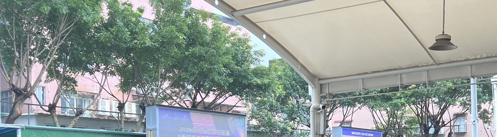
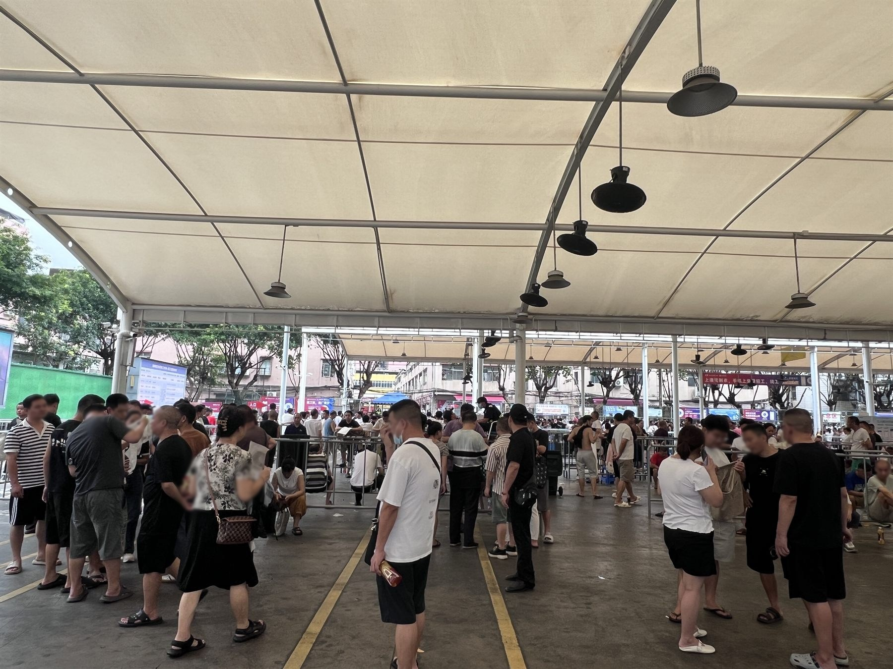
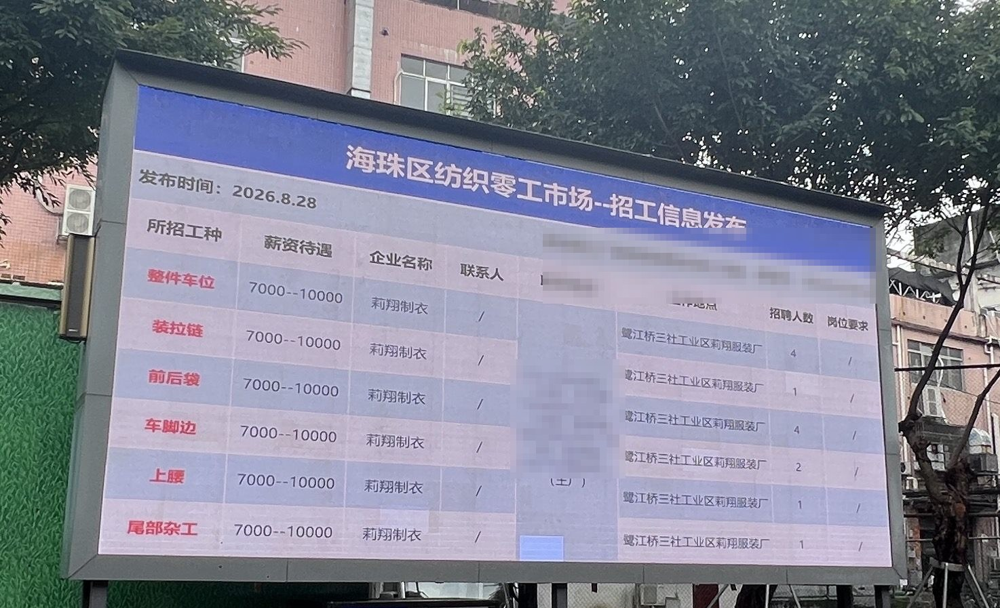
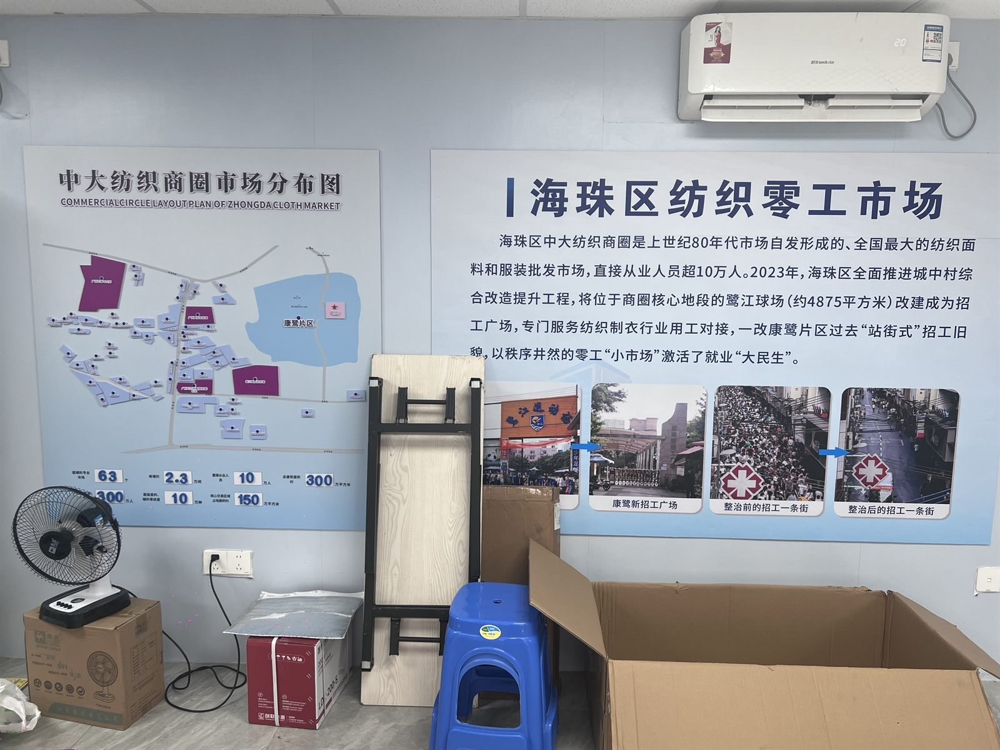
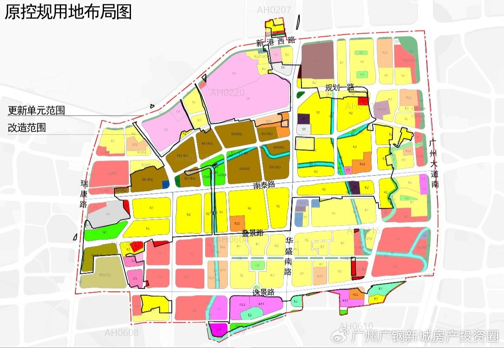

首页 / 背景资料
康乐村与鹭江村，行政上同属广州市海珠区凤阳街道，地理上紧紧相邻，产业与人口结构高度相似，因而被合称为「康鹭片区」。这一页梳理它的区位、产业逻辑、空间形态、编年脉络与关键概念，是理解后续地图与人物档案的基础。
01 / Location
向北十分钟是中大布匹市场，半小时到沙河与十三行，向南 4 公里是广州塔——「去哪里都快」既是这里的核心竞争力，也是它全部矛盾的起点。
康鹭片区位于海珠区的「心脏」位置。向北，是中山大学南校区与由其衍生出的中大布匹市场—— 全球规模最大的纺织面辅料交易集聚地，步行约十分钟可达； 向西北半小时车程，是沙河、十三行等成衣批发档口； 向南 4 公里，是广州塔。
这种「去哪里都快」的区位，是制衣村的核心竞争力，也是它全部矛盾的起点： 产业极度依赖区位，而区位的价值又随着城市发展水涨船高，最终反过来挤压产业的生存空间。
康鹭片区沉淀着广州服装产业数十年的发展成果：这里拥有行内极具影响力的纺织面辅料交易基地——中大布匹市场， 离沙河、十三行等成衣批发市场约半小时车程，产业链健全、上下游联动高效。
所属：广州市海珠区凤阳街道，含康乐村、鹭江村两个城中村。
面积：约 1—1.1 平方公里（不同口径略有差异）。
常住人口：逾 10 万，峰值从业者逾 30 万，外来人口占 95% 以上。
企业：有照制衣厂、仓储企业约 5200 家；含无照作坊与辅料、印花等配套，相关主体近 2 万家。
从业者中湖北籍占比约八成，主要来自天门、仙桃、潜江、监利、荆州等地。 乡缘网络承担了招工、借贷、转厂、赊账等全部信任功能——「一个带一个」， 也从学徒到老板铺出了一条看得见的上升通道。
一平方公里内人口逾 10 万，而广州市 2022 年平均人口密度为每平方公里 2530 人。 极高密度叠加握手楼与小街窄巷，使消防、治安、公共卫生等问题长期难以根治。

Boundary
康乐村口是「康樂東約」——匾额按传统右起读法，两侧楹联「樂鼓鳴海」「康衢接雲」； 鹭江村口是「鹭江春晓」，重檐之上立双龙与火焰宝珠。两座形制不同，各自标记一个村。
牌坊之外的城市界面已经完全不同：一侧是写字楼与公积金管理中心，一侧是高层住宅与车流。 村与城之间几乎没有过渡带，这正是康鹭被反复讨论的原因之一。

02 / Production
康鹭不做设计，也不直接面向消费市场。它做的是整个链条上最被动、也最难以替代的一环：把一块布料在最短时间内变成一件可以上架的衣服。
从看版选料到爆款追单，六道工序按时间推进；每一道都标着它发生在哪一天、哪个时段。
制衣工序复杂，往往不是一家厂能包揽的。除常规加工外，印花、烫钻、绣花、牛仔洗水等上下游工序 都分布在康乐、鹭江片区周围，最近的就在楼下，需要时最多半天就能送去再加工。 这种「工序的地理邻近」是速度的物理基础，也是清远园区短期内难以复制的东西。
用工模式是另一半答案。能够快速上手做不同款式、不同类型整件的日结工，是片区的主流用工形式： 即招即用、完工即走，让工厂既能接几十件的小单，也能应付上万件的爆款。
厂主不做设计、不做直销，生意好坏高度依赖档口与电商客户。客户压价一两块，为了留住客户也只能答应。
上下游通常没有正式合同，客户收货后再付款。货款被拖欠十几万、几十万的案例并不罕见， 但工人的工资「一天都不能拖」。
有厂主回忆：2010 年 200 平米厂房月租 5300 元，如今涨至 17000 元； 工人工资从「每月 2000 块都给做」变成前面要加个「1」。而单件加工费，近年反而下调了 1—2 元。
Labor Market
老板与工人面对面谈价，谈妥即上工、完工即结账。这里原为鹭江球场， 2023 年改造为零工市场，替代了此前沿街招工、人车混杂的状态，日均人流量约 2 万人次。
对许多日结工来说，这里就是每天上班的第一站；对厂主来说， 能否在半小时内招到合适的车位，直接决定今天能不能出货。


03 / Space
康鹭的空间是被产业一遍遍改写出来的。每一种建筑形态，背后都是一次成本与效率的取舍。
为避免阳光被完全遮挡而不断加高的自建楼，楼与楼近到可以握手。村内巷道狭窄，消防车难以进入； 下雨时一楼常被淹。有人形容：这里的阳光都是要收费的。
村民在自建楼顶加建的铁皮顶楼层。格局开阔、能摆更多机器，房租与转让费更低， 逐渐成为制衣厂最典型的载体。2023 年拆违中，它们是首要整改对象，补偿标准为 500 元/㎡。
2023 年 8 月，近 5000 ㎡的鹭江球场被改造为零工市场，配备饮水机、卫生间、云广播、LED 屏、 人脸识别监控，替代了此前沿街招工、人车混杂的状态。日均人流量约 2 万人次。
更多关于这些空间的具体位置与田野记录，请见 康鹭地图。


05 / Glossary
这些词在康鹭有特定的含义。理解它们，是理解这片街区的第一步。